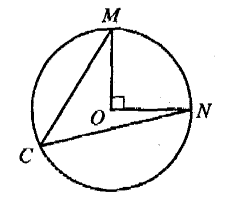
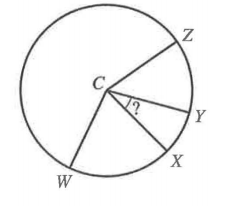
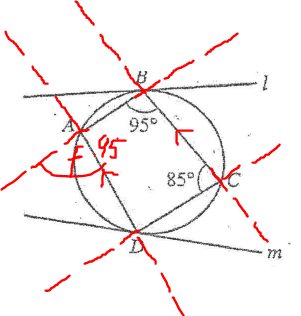
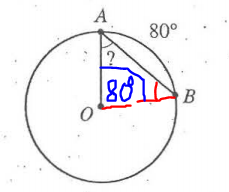
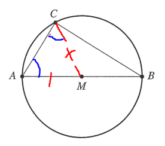
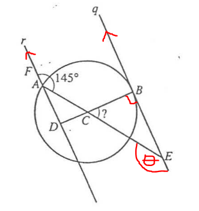
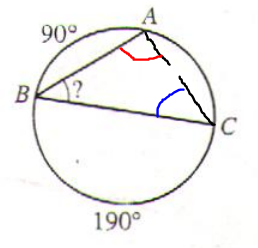
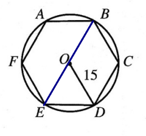

Circle Theorems
Welcome to Our Site
I greet you this day,
For the Classic ACT exam:
The ACT Mathematics test is a timed exam...60 questions in 60 minutes
This implies that you have to solve each question in one minute.
Each of the first 20 questions (less challenging) will typically take less than a minute a solve.
Each of the next 20 questions (medium challenging) may take about a minute to solve.
Each of the last 20 questions (more challenging) may take more than a minute to solve.
The goal is to maximize your time.
You use the time saved on the questions you solve in less than a minute to solve questions that will take more
than a minute.
So, you should try to solve each question correctly and timely.
So, it is not just solving a question correctly, but solving it correctly on time.
Please ensure you attempt all ACT questions.
There is no negative penalty for a wrong answer.
Also: please note that unless specified otherwise, geometric figures are drawn to scale. So, you can figure out
the correct answer by eliminating the incorrect options.
Other suggestions are listed in the solutions/explanations as applicable.
These are the solutions to the ACT past questions on Circle Theorems.
The link to the video solutions will be provided for you. Please subscribe to the YouTube channel to be notified
of upcoming livestreams.
You are welcome to ask questions during the video livestreams.
If you find these resources valuable and if any these resources were helpful in your passing the
Mathematics papers of the ACT, please consider making a donation:
Cash App: $ExamsSuccess or
cash.app/ExamsSuccess
PayPal: @ExamsSuccess or
PayPal.me/ExamsSuccess
Google charges me for the hosting of this website and my other
educational websites. It does not host any of the websites for free.
Besides, I spend a lot of time to type the questions and the solutions well.
As you probably know, I provide clear explanations on the solutions.
Your donation is appreciated.
Comments, ideas, areas of improvement, questions, and constructive criticisms are welcome.
Feel free to contact me. Please be positive in your message.
I wish you the best.
Thank you.
Length of Arc, Area of Sector, Area of Circle, Circumference of Circle
Except stated otherwise, use:
$
d = diameter \\[3ex]
r = radius \\[3ex]
L = arc\:\:length \\[3ex]
A = area\;\;of\;\;sector \\[3ex]
\theta = central\:\:angle \\[3ex]
\pi = \dfrac{22}{7} \\[5ex]
RAD = radians \\[3ex]
^\circ = DEG = degrees \\[7ex]
\underline{\theta\;\;in\;\;DEG} \\[3ex]
L = \dfrac{2\pi r\theta}{360} \\[5ex]
\theta = \dfrac{180L}{\pi r} \\[5ex]
r = \dfrac{180L}{\pi \theta} \\[5ex]
A = \dfrac{\pi r^2\theta}{360} \\[5ex]
\theta = \dfrac{360A}{\pi r^2} \\[5ex]
r = \dfrac{360A}{\pi\theta} \\[7ex]
\underline{\theta\;\;in\;\;RAD} \\[3ex]
L = r\theta \\[5ex]
\theta = \dfrac{L}{r} \\[5ex]
r = \dfrac{L}{\theta} \\[5ex]
A = \dfrac{r^2\theta}{2} \\[5ex]
\theta = \dfrac{2A}{r^2} \\[5ex]
r = \sqrt{\dfrac{2A}{\theta}} \\[7ex]
Circumference\:\:of\:\:a\:\:circle = 2\pi r = \pi d \\[3ex]
L = \dfrac{2A}{r} \\[5ex]
r = \dfrac{2A}{L} \\[5ex]
A = \dfrac{Lr}{2}
$
Circle Theorems
(1.) The angle in a semicircle is a right angle (an angle of 90°).
(2.) Angles in the same segment of a circle are equal.
OR
Angles subtended by a chord of a circle in the same segment of the circle are equal.
(3.) The angle which an arc of a circle subtends at the center is twice the angle which the same
arc of the circle subtends at the circumference.
OR
The measure of any angle inscribed in a circle is half the measure of the intercepted arc.
(4.) The sum of the interior opposite angles of a cyclic quadrilateral is 180°
OR
The interior opposite angles of a cyclic quadrilateral are supplementary
(5.) The exterior angle of a cyclic quadrilateral is equal to the interior opposite angle.
(6.) The radius of a circle is perpendicular to the tangent of the circle at the point of contact.
This implies that the angle between the radius of a circle and the tangent to the circle at the point of
contact is 90°
(7.) Intersecting Tangents Theorem or Intersecting Tangent-Tangent Theorem and
Angle of Intersecting Tangents Theorem
If two tangents are drawn from the same external point:
(a.) the two tangents are equal in length
(b.) the line joining the external point and the centre of the circle bisects the angle formed by the two
tangents.
(c.) the line joining the external point and the centre of the circle bisects the angle formed by the two
radii.
(8.) Alternate Segment Theorem
The angle between a tangent to a circle and a chord drawn from the point of contact, is equal to the angle in
the alternate segment.
(9.) If a line drawn from the center of the circle bisects a chord, then:
(a.) it bisects its arc (the angle opposite the chord) and
(b.) it is perpendicular to the chord.
(10.) If a line drawn from the center of the circle is perpendicular to a chord, then:
(a.) it bisects the chord and
(b.) it bisects its arc (the angle opposite the chord).
(11.) Intersecting Chords Theorem
When two chords intersect, the product of the lengths of the segments of one chord is equal to the product of
the
lengths of the segments of the other chord.
(12.) Angle of Intersecting Chords Theorem
The angle formed when two chords intersect is equal to half the sum of the intercepted arcs.
(13.) Intersecting Secants Theorem or Intersecting Secant-Secant Theorem
In the intersection of two secants from the same exterior point:
the product: of the distance between the first point and the external point and the distance between
the second point and the external point for the first secant is equal to
the product of the distance between the first point and the external point and the distance between the
second point and the external point for the second secant.
Alternatively, we can state it as: If two secant segments are drawn to a circle from an exterior point, then
the product of the measures of one secant segment and its external segment is equal to the product of the
measures of the other secant segment and its external segment.
(14.) Angle of Intersecting Secants (Inside the Circle) Theorem
The angle formed when two secants intersect inside a circle is equal to half the sum of the intercepted arcs.
(15.) Angle of Intersecting Secants (Outside the Circle) Theorem
The angle formed when two secants intersect outside a circle is equal to half the difference of the
intercepted arcs.
(16.) Intersecting Secant-Tangent Theorem or Intersecting Tangent-Secant Theorem
In the intersection of a secant and a tangent from the same external point:
the product of the distance between the first point and the external point and the distance between the
second point and the external point for the secant is equal to
the square of the distance between the point of contant and the external point for the tangent.
(17.) Angle of Intersecting Secant-Tangent Theorem
The angle formed when a secant and a tangent intersect outside a circle is equal to half the difference of the
intercepted arcs.
The length of $\overline{AO}$ is 4 inches, and arc $\overset{\huge\frown}{AB}$ measures 112°
What is the measure of ∠ABO?

$ F.\;\; 17^\circ \\[3ex] G.\;\; 34^\circ \\[3ex] H.\;\; 45^\circ \\[3ex] J.\;\; 56^\circ \\[3ex] K.\;\; 68^\circ \\[3ex] $

Intercepted arc = angle at center (central angle)
$ \angle AOB = \overset{\huge\frown}{AB} = 112^\circ \\[5ex] \underline{\triangle AOB} \\[3ex] \angle ABO = \angle BAO = p ...base\;\;\angle s\;\;of\;\;isosceles\;\;\triangle AOB \\[3ex] \angle ABO + \angle BAO + \angle AOB = 180^\circ...sum\;\;of\;\;\angle s\;\;in\;\;\triangle OAB \\[3ex] \implies \\[3ex] p + p + 112 = 180 \\[3ex] 2p = 180 - 112 \\[3ex] 2p = 68 \\[3ex] p = \dfrac{68}{2} \\[5ex] p = 34 \\[3ex] \therefore \angle ABO = \angle BAO = 34^\circ $
What is the degree measure of $\angle ABC$?

$ A.\;\; 45^\circ \\[3ex] B.\;\; 60^\circ \\[3ex] C.\;\; 75^\circ \\[3ex] D.\;\; 90^\circ \\[3ex] E.\;\; \text{Cannot be determined from the given information} \\[3ex] $
$ \angle ABC = 90^\circ...\text{Angle in a semicircle} $
What is the sum of the measures of $\angle CMO$ and $\angle CNO$?

$ F.\;\; 90^\circ \\[3ex] G.\;\; 67.5^\circ \\[3ex] H.\;\; 60^\circ \\[3ex] J.\;\; 45^\circ \\[3ex] K.\;\; 22.5^\circ \\[3ex] $

$ Center:\;\;O \\[3ex] \angle \;\;at\;\;center = 90^\circ \\[3ex] Let: \\[3ex] \angle MCN = \psi \\[3ex] \angle CMN = \theta \\[3ex] \angle CNM = \phi \\[3ex] \angle OMN = x \\[3ex] \angle ONM = y \\[3ex] 90 = 2 * \psi ...\angle \;\;at\;\;center = 2 * \angle\;\;at\;\;circumference \\[3ex] 2\psi = 90 \\[3ex] \psi = \dfrac{90}{2} \\[5ex] \psi = 45^\circ \\[3ex] Construction:\;\;Draw\;\;a\;\;chord\;\;to\;\;join\;\;M\;\;to\;\;N \\[5ex] \underline{\triangle OMN} \\[3ex] x = y ...base\;\;\angle s\;\;of\;\;isosceles\;\;\triangle OMN \\[3ex] Because\;\;of\;\;same\;\;radii...OM = ON \\[3ex] \implies \\[3ex] 90 + x + y = 180 ...sum\;\;of\;\;\angle s\;\;in\;\;\triangle OMN \\[3ex] 90 + x + x = 180 \\[3ex] 90 + 2x = 180 \\[3ex] 2x = 180 - 90 \\[3ex] 2x = 90 \\[3ex] x = \dfrac{90}{2} \\[5ex] x = 45 \\[3ex] x = y = 45^\circ \\[5ex] \underline{\triangle CMN} \\[3ex] \psi + \theta + x + y + \phi = 180 ...sum\;\;of\;\;\angle s\;\;in\;\;\triangle CMN \\[3ex] 45 + \theta + 45 + 45 + \phi = 180 \\[3ex] 135 + \theta + \phi = 180 \\[3ex] \theta + \phi = 180 - 135 \\[3ex] \theta + \phi = 45^\circ $
Points W, X, Y, and Z lie on the circle.
The measure of $\angle WCY$ is $100^\circ$, the measure of $\angle XCZ$ is $80^\circ$, and the measure of $\angle WCZ$ is $150^\circ$
What is the measure of $\angle XCY$?

$ A.\;\; 20^\circ \\[3ex] B.\;\; 25^\circ \\[3ex] C.\;\; 30^\circ \\[3ex] D.\;\; 40^\circ \\[3ex] E.\;\; 50^\circ \\[3ex] $
The ACT is a timed test.
It is important to do this question within a minute. Remember what I wrote earlier
So, the faster approach for me is to use alphabets rather than angles
This is what I mean

$ Let: \\[3ex] \angle WCX = m \\[3ex] \angle XCY = n \\[3ex] \angle YCZ = p \\[3ex] Based\;\;on\;\;the\;\;question\;\;and\;\;modified\;\;diagram: \\[3ex] m + n = 100 ...eqn.(1) \\[3ex] n + p = 80...eqn.(2) \\[3ex] m + n + p = 150 ...eqn.(3) \\[3ex] Substitute\;\;eqn.(1)\;\;into\;\;eqn.(3) \implies \\[3ex] 100 + p = 150 \\[3ex] p = 150 - 100 \\[3ex] p = 50 ...eqn.(4) \\[3ex] Substitute\;\;eqn.(4)\;\;into\;\;eqn.(2) \implies \\[3ex] n + 50 = 80 \\[3ex] n = 80 - 50 \\[3ex] n = 30 \\[3ex] \therefore \angle XCY = 30^\circ $
Points A and C are on the circle.
The measure of $\angle ABC$ is $95^\circ$ and the measure of $\angle BCD$ is $85^\circ$

The lines in which of the following pairs of lines are necessarily parallel?
$ I.\;\; l\;\;and\;\;m \\[3ex] II.\;\; \overleftrightarrow{AB} \;\;and\;\; \overleftrightarrow{DC} \\[3ex] III.\;\; \overleftrightarrow{AD} \;\;and\;\; \overleftrightarrow{BC} \\[3ex] F.\;\; I\;\;only \\[3ex] G.\;\; II\;\;only \\[3ex] H.\;\; III\;\;only \\[3ex] J.\;\; I\;\;and\;\;II\;\;only \\[3ex] K.\;\; I,\;\;II,\;\;and\;\;III \\[3ex] $
$ l\;\;and\;\;m\;\;are\;\;not\;\;parallel \\[3ex] Eliminate\;\;Option\;I \\[5ex] \underline{Cyclic\;\;Quadrilateral\;ABCD} \\[3ex] \angle A + \angle C = 180^\circ \\[3ex] ...interior\;\;opposite\;\;\angle s\;\;of\;\;a\;\;cyclic\;\;quad\;\;are\;\;supplementary \\[3ex] \angle A + 85 = 180 \\[3ex] \angle A = 180 - 85 \\[3ex] \angle A = 95^\circ \\[3ex] Also: \\[3ex] \angle B + \angle D = 180^\circ \\[3ex] ...interior\;\;opposite\;\;\angle s\;\;of\;\;a\;\;cyclic\;\;quad\;\;are\;\;supplementary \\[3ex] 95 + \angle D = 180 \\[3ex] \angle D = 180 - 95 \\[3ex] \angle D = 85^\circ \\[3ex] Try\;\;Option\;II \\[3ex] $

$ If\;\;\overleftrightarrow{AB} \;||\; \overleftrightarrow{DC} \\[3ex] e = 85^\circ ...corresponding\;\;\angle s\;\;are\;\;congruent \\[3ex] But: \\[3ex] e + 95^\circ = 180^\circ ...\angle s\;\;on\;\;a\;\;straight\;\;line \\[3ex] e = 180 - 95 \\[3ex] e = 85^\circ \\[3ex] 85^\circ = 85^\circ \\[3ex] \implies that\;\; \overleftrightarrow{AB} \;||\; \overleftrightarrow{DC} \\[3ex] Try\;\;Option\;III \\[3ex] $

$ If\;\;\overleftrightarrow{AD} \;||\; \overleftrightarrow{BC} \\[3ex] f = 95^\circ ...corresponding\;\;\angle s\;\;are\;\;congruent \\[3ex] But: \\[3ex] f + 95^\circ = 180^\circ ...\angle s\;\;on\;\;a\;\;straight\;\;line \\[3ex] f = 180 - 95 \\[3ex] f = 85^\circ \\[3ex] 95^\circ \ne 85^\circ \\[3ex] \implies that\;\; \overleftrightarrow{AD} \;\not||\; \overleftrightarrow{BC} \\[3ex] Eliminate\;\;Option\;III \\[3ex] Correct\;\;Option:\;\;II\;\;only $
What is the value of x?

(Note: When two chords intersect, the product of the lengths of the segments of one chord equals the product of the lengths of the segments of the other chord.)
$ A.\;\; 10 \\[3ex] B.\;\; 13.5 \\[3ex] C.\;\; 14 \\[3ex] D.\;\; 17.5 \\[3ex] E.\;\; 19 \\[3ex] $
$ 2 * x = 7 * 5 ...Intersecting\;\;Chords\;\;Theorem \\[3ex] x = \dfrac{7 * 5}{2} \\[5ex] x = \dfrac{35}{2} \\[5ex] x = 17.5 $
What is the measure of $\angle BAO$?

$ F.\;\; 30^\circ \\[3ex] G.\;\; 40^\circ \\[3ex] H.\;\; 50^\circ \\[3ex] J.\;\; 60^\circ \\[3ex] K.\;\; 80^\circ \\[3ex] $
Construction: Join the radius from point O to point B

Intercepted arc = angle at center (central angle)
$ \angle AOB = \overset{\huge\frown}{AB} = 80^\circ \\[5ex] \underline{\triangle OAB} \\[3ex] \angle BAO = \angle ABO = p ...base\;\;\angle s\;\;of\;\;isosceles\;\;\triangle OAB \\[3ex] \angle BAO + \angle ABO + \angle AOB = 180^\circ...sum\;\;of\;\;\angle s\;\;in\;\;\triangle OAB \\[3ex] \implies \\[3ex] p + p + 80 = 180 \\[3ex] 2p = 180 - 80 \\[3ex] 2p = 100 \\[3ex] p = \dfrac{100}{2} \\[5ex] p = 50 \\[3ex] \therefore \angle BAO = \angle ABO = 50^\circ $
Which of the following is the most direct explanation of why $\triangle MCA$ is isosceles?

F. 2 sides are radii of the circle
G. Side-angle-side congruence
H. Angle-side-angle congruence
J. Angle-angle-angle similarity
K. The Pythagorean theorem
Construction: Draw the radius from center: M to circumference: C

Because MC and MA are radii (same length):
$\angle MCA = \angle MAC$...base angles of isosceles $\triangle MCA$
$\overline{AE}$ and $\overline{BD}$ both go through C, q is tangent to the circle at B, F lies on $\overleftrightarrow{AD}$, and the measure of $\angle FAC$ is $145^\circ$
What is the measure of $\angle BCE$?

$ F.\;\; 145^\circ \\[3ex] G.\;\; 90^\circ \\[3ex] H.\;\; 65^\circ \\[3ex] J.\;\; 55^\circ \\[3ex] K.\;\; 35^\circ \\[3ex] $

$ \theta = 145^\circ...interior\;\;alternate\;\;\angle s\;\;are\;\;equal \\[3ex] \angle BEC + \theta = 180^\circ ...\angle s\;\;on\;\;a\;\;straight\;\;line \\[3ex] \angle BEC + 145 = 180 \\[3ex] \angle BEC = 180 - 145 \\[3ex] \angle BEC = 35^\circ \\[3ex] \angle CBE = 90^\circ \\[3ex] ...radius\;CB\;\perp\;tangent\;qBE\;\;at\;\;point\;\;of\;\;contact\;B \\[5ex] \underline{\triangle CBE} \\[3ex] \angle BCE + \angle BEC + \angle CBE = 180^\circ ...sum\;\;of\;\;\angle s\;\;in\;\;\triangle CBE \\[3ex] \angle BCE + 35 + 90 = 180 \\[3ex] \angle BCE + 125 = 180 \\[3ex] \angle BCE = 180 - 125 \\[3ex] \angle BCE = 55^\circ $
The circle intersects $\overline{OP}$ at B.
The length of $\overline{AP}$ is 12 centimeters, and the measure of ∠APO is 20°.
Which of the following values is closest to the length, in centimeters, of $\overline{BP}$ ?

(Note: $\sin 20^\circ \approx 0.342$, $\cos 20^\circ \approx 0.940$, and $\tan 20^\circ \approx 0.364$)
$ A.\;\; 2.1 \\[3ex] B.\;\; 4.4 \\[3ex] C.\;\; 6.9 \\[3ex] D.\;\; 7.6 \\[3ex] E.\;\; 8.4 \\[3ex] $
$ SOHCAHTOA \\[3ex] \tan 20 = \dfrac{\overline{OA}}{\overline{AP}} \\[5ex] 0.364 = \dfrac{\overline{OA}}{12} \\[5ex] \overline{OA} = 12 * 0.364 \\[3ex] \overline{OA} = 4.368 \\[3ex] \overline{OB} = \overline{OA} = 4.368\;cm ...radius \\[3ex] \cos 20 = \dfrac{\overline{AP}}{\overline{OP}} \\[5ex] 0.940 = \dfrac{12}{\overline{OP}} \\[5ex] 0.94 * \overline{OP} = 12 \\[3ex] \overline{OP} = \dfrac{12}{0.94} \\[5ex] \overline{OP} = 12.76595745 \\[3ex] \overline{OP} = \overline{OB} + \overline{BP} ...diagram \\[3ex] \overline{OB} + \overline{BP} = \overline{OP} \\[3ex] 4.368 + \overline{BP} = 12.76595745 \\[3ex] \overline{BP} = 12.76595745 - 4.368 \\[3ex] \overline{BP} = 8.397957447 \\[3ex] \overline{BP} \approx 8.4\;cm $
Points A, B, and C are on the circle shown below.
What is the measure of ∠ABC?

$ A.\;\; 40^\circ \\[3ex] B.\;\; 60^\circ \\[3ex] C.\;\; 80^\circ \\[3ex] D.\;\; 140^\circ \\[3ex] E.\;\; 160^\circ \\[3ex] $
Construction: Join the chord from point A to point C

$ 190 = 2 * \angle BAC ...intercepted\;\;arc = 2 * inscribed\;\;\angle \\[3ex] 2 * \angle BAC = 190 \\[3ex] \angle BAC = \dfrac{190}{2} \\[5ex] \angle BAC = 95^\circ \\[3ex] 90 = 2 * \angle BCA ...intercepted\;\;arc = 2 * inscribed\;\;\angle \\[3ex] 2 * \angle BCA = 90 \\[3ex] \angle BCA = \dfrac{90}{2} \\[5ex] \angle BCA = 45^\circ \\[5ex] \underline{\triangle BAC} \\[3ex] \angle ABC + \angle BAC + \angle BCA = 180^\circ ...sum\;\;of\;\;\angle s\;\;in\;\;\triangle BAC \\[3ex] \angle ABC + 95 + 45 = 180 \\[3ex] \angle ABC + 140 = 180 \\[3ex] \angle ABC = 180 - 140 \\[3ex] \angle ABC = 40^\circ $
Segment $\overline{BC}$ is then drawn to form $\triangle ABC$
If $\angle A$ measures $70^\circ$, what is the measure of $\angle ABC$?
$ F.\;\; 70^\circ \\[3ex] G.\;\; 55^\circ \\[3ex] H.\;\; 40^\circ \\[3ex] J.\;\; 35^\circ \\[3ex] K.\;\; \text{Cannot be determined from the given information} \\[3ex] $
Let us draw the diagram for this question

AB = AC ...the two tangents: AB and AC, drawn from the same external point:A are equal in length
$ \implies \triangle ABC\;\;is\;\;an\;\;isosceles\;\;triangle \\[5ex] \underline{\triangle ABC} \\[3ex] \angle ABC + \angle ACB + \angle BAC = 180^\circ...sum\;\;of\;\;\angle s\;\;in\;\;\triangle ABC \\[3ex] Let\;\; \angle ABC = \angle ACB = p \\[3ex] \angle BAC = \angle A = 70^\circ \\[3ex] \implies \\[3ex] p + p + 70 = 180 \\[3ex] 2p = 180 - 70 \\[3ex] 2p = 110 \\[3ex] p = \dfrac{110}{2} \\[5ex] p = 55 \\[3ex] \therefore \angle ABC = 55^\circ $
What is the measure of ∠CAD?

$ F.\;\; 27^\circ \\[3ex] G.\;\; 30^\circ \\[3ex] H.\;\; 37.5^\circ \\[3ex] J.\;\; 40^\circ \\[3ex] K.\;\; 60^\circ \\[3ex] $
$ |AD|\;\;is\;\;a\;\;diameter \\[3ex] \implies \\[3ex] \angle ACD = 90^\circ ...\angle\;\;in\;\;a\;\;semicircle \\[3ex] Sum\;\;of\;\;the\;\;interior\;\;\angle s\;\;of\;\;a\;\;regular\;\;polygon \\[3ex] = 180(n - 2) \\[3ex] For\;\;a\;\;regular\;\;hexagon:\;\;n = 6 \;\;(6\;\;sides) \\[3ex] Sum\;\;of\;\;the\;\;interior\;\;\angle s\;\;of\;\;a\;\;regular\;\;hexagon \\[3ex] = 180(6 - 2) \\[3ex] = 180(4) \\[3ex] = 720^\circ \\[3ex] Each\;\;interior\;\;\angle\;\;of\;\;a\;\;regular\;\;hexagon \\[3ex] = \dfrac{Sum}{n} \\[5ex] = \dfrac{720}{6} \\[5ex] = 120^\circ \\[3ex] \implies \\[3ex] \angle A = \angle B = \angle C = \angle D = \angle E = \angle F = 120^\circ \\[5ex] \underline{Cyclic\;\;Quadrilateral\;\;ABCD} \\[3ex] \angle ABC = \angle B = 120^\circ ...diagram \\[3ex] \angle ABC + \angle CDA = 180^\circ \\[3ex] ...interior\;\;opposite\;\;\angle s\;\;of\;\;a\;\;cyclic\;\;quad\;\;are\;\;supplementary \\[3ex] 120 + \angle CDA = 180 \\[3ex] \angle CDA = 180 - 120 \\[3ex] \angle CDA = 60^\circ \\[5ex] \underline{\triangle ACD} \\[3ex] \angle CAD + \angle CDA + \angle ACD = 180^\circ ...sum\;\;of\;\;\angle s\;\;in\;\;\triangle ACD \\[3ex] \angle CAD + 60 + 90 = 180 \\[3ex] \angle CAD + 150 = 180 \\[3ex] \angle CAD = 180 - 150 \\[3ex] \angle CAD = 30^\circ $
If the length of radius $\overline{OD}$ is 15 centimeters, how long is $\overline{AB}$, in centimeters?

$ A.\;\; 15 \\[3ex] B.\;\; 18 \\[3ex] C.\;\; 30 \\[3ex] D.\;\; 5\pi \\[3ex] E.\;\; \dfrac{225\pi}{6} \\[5ex] $
Construction: Join the chord from Point B to Point E

$ Sum\;\;of\;\;the\;\;interior\;\;\angle s\;\;of\;\;a\;\;regular\;\;polygon \\[3ex] = 180(n - 2) \\[3ex] For\;\;a\;\;regular\;\;hexagon:\;\;n = 6 \;\;(6\;\;sides) \\[3ex] Sum\;\;of\;\;the\;\;interior\;\;\angle s\;\;of\;\;a\;\;regular\;\;hexagon \\[3ex] = 180(6 - 2) \\[3ex] = 180(4) \\[3ex] = 720^\circ \\[3ex] Each\;\;interior\;\;\angle\;\;of\;\;a\;\;regular\;\;hexagon \\[3ex] = \dfrac{Sum}{n} \\[5ex] = \dfrac{720}{6} \\[5ex] = 120^\circ \\[3ex] \implies \\[3ex] \angle A = \angle B = \angle C = \angle D = \angle E = \angle F = 120^\circ \\[3ex] \underline{Cyclic\;\;Quadrilateral\;\;EBCD} \\[3ex] \angle BCD = \angle C = 120^\circ ...diagram \\[3ex] \angle BED + \angle BCD = 180^\circ \\[3ex] ...interior\;\;opposite\;\;\angle s\;\;of\;\;a\;\;cyclic\;\;quad\;\;are\;\;supplementary \\[3ex] \angle BED + 120 = 180 \\[3ex] \angle BED = 180 - 120 \\[3ex] \angle BED = 60^\circ \\[3ex] \underline{\triangle OED} \\[3ex] \angle OED = \angle BED = 60^\circ ... diagram \\[3ex] \angle OED = \angle ODE = 60^\circ ...base\;\;\angle s\;\;of\;\;isosceles\;\; \triangle OED \\[3ex] \implies \\[3ex] |OE| = |OD| = 15\;cm ... isosceles\;\; \triangle OED \\[3ex] \angle EOD + \angle OED + \angle ODE = 180^\circ ...sum\;\;of\;\;\angle s\;\;in\;\;\triangle OED \\[3ex] \angle EOD + 60 + 60 = 180 \\[3ex] \angle EOD + 120 = 180 \\[3ex] \angle EOD = 180 - 120 \\[3ex] \angle EOD = 60^\circ \\[3ex] \implies \\[3ex] \triangle OED \;\;is\;\;an\;\;equilateral\;\;\triangle \\[3ex] \angle EOD = \angle OED = \angle ODE = 60^\circ \\[3ex] Similarly: \\[3ex] |OD| = |OE| = |ED| = 15\;cm ...equilateral\;\; \triangle OED \\[3ex] \implies \\[3ex] |AB| = |ED| = 15\;cm ...regular\;\;hexagon $
Secants $\overleftrightarrow{AC}$ and $\overleftrightarrow{CE}$ intersect at C.
The chords $overline{AB}$ and $\overline{DE}$ are congruent.
Minor arc $\overset{\huge\frown}{AE}$ measures 106°
Minor arc $\overset{\huge\frown}{BD}$ measures 64°
What is the measure of minor arc $\overset{\huge\frown}{DE}$ ?

$ F.\;\; 42^\circ \\[3ex] G.\;\; 84^\circ \\[3ex] H.\;\; 85^\circ \\[3ex] J.\;\; 90^\circ \\[3ex] K.\;\; 95^\circ \\[3ex] $
Let us represent the information in the circle
Construction:
(a.) Let O be the center of the circle.
(b.) Indicate the central angles corresponding to the minor arcs.
(c.) Indicate the congruent lines (chords)

$ \underline{\triangle AOE} \\[3ex] \angle OAE = \angle OEA = p ...base\;\;\angle s\;\;of\;\;isosceles\;\; \triangle AOE \\[3ex] \angle OAE + \angle OEA + \angle AOE = 180^\circ ...sum\;\;of\;\;\angle s\;\;in\;\;\triangle AOE \\[3ex] p + p + 106 = 180 \\[3ex] 2p = 180 - 106 \\[3ex] 2p = 74 \\[3ex] p = \dfrac{74}{2} \\[5ex] p = 37 \\[3ex] \therefore \angle OAE = \angle OEA = 37^\circ \\[3ex] \angle ACE = \dfrac{\overset{\huge\frown}{AE} - \overset{\huge\frown}{BD}}{2} ... Angle\;\;of\;\;Intersecting\;\;Chords\;\;Theorem \\[5ex] \implies \\[3ex] \angle ACE = \dfrac{\angle AOE - \angle BOD}{2} \\[5ex] \angle ACE = \dfrac{106 - 64}{2} \\[5ex] \angle ACE = \dfrac{42}{2} \\[5ex] \angle ACE = 21^\circ \\[3ex] \underline{\triangle ACE} \\[3ex] |AB| \cong |DE| ...given \\[3ex] \implies \\[3ex] \angle CAE = \angle CEA = k \\[3ex] \angle CAE + \angle CEA + \angle ACE = 180^\circ ...sum\;\;of\;\;\angle s\;\;in\;\;\triangle ACE \\[3ex] k + k + 21 = 180 \\[3ex] 2k = 180 - 21 \\[3ex] 2k = 159 \\[3ex] k = \dfrac{159}{2} \\[5ex] k = 79.5 \\[3ex] \therefore \angle CAE = \angle CEA = 79.5^\circ \\[3ex] \angle OEA + \angle OED = \angle CEA ...diagram \\[3ex] 37 + \angle OED = 79.5 \\[3ex] \angle OED = 79.5 - 37 \\[3ex] \angle OED = 42.5^\circ \\[3ex] \underline{\triangle EOD} \\[3ex] \angle OED = \angle ODE = 42.5^\circ ...base\;\;\angle s\;\;of\;\;isosceles\;\; \triangle EOD \\[3ex] \angle OED + \angle ODE + \angle EOD = 180^\circ ...sum\;\;of\;\;\angle s\;\;in\;\;\triangle EOD \\[3ex] 42.5 + 42.5 + \angle EOD = 180 \\[3ex] 85 + \angle EOD = 180 \\[3ex] \angle EOD = 180 - 85 \\[3ex] \angle EOD = 95^\circ \\[3ex] \implies \\[3ex] \overset{\huge\frown}{DE} = \angle EOD = 85^\circ $